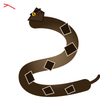
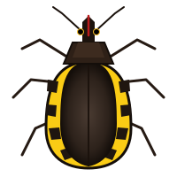
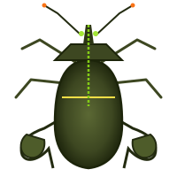
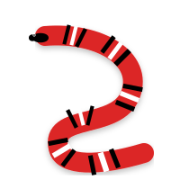
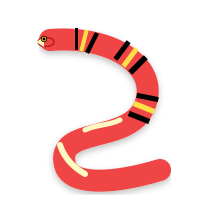
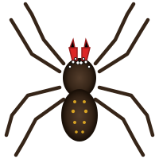
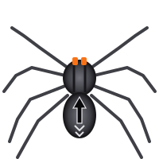
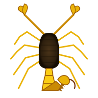
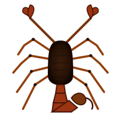

Bothrops jararaca
Jararaca (Jararaca-comum)
Fosseta loreal presente entre a narina e o olho.
Diferenças Vitais: Perigoso vs Inofensivo
Aprenda a reconhecer em segundos as marcas diagnósticas que salvam vidas.
Barbeiro vs Percevejo de Planta

BARBEIROBico reto e curto de 3 segmentos que dobra sob o tórax e não passa do 1º par de patas. Transmite Chagas!

PERCEVEJOBico muito longo que vai até o meio da barriga (fitófago) ou curvo. NÃO transmite Chagas!
Coral-Verdadeira vs Falsa-Coral

VERDADEIRAAnéis dão a volta completa pelo ventre. Olhos minúsculos, sem fosseta. Parada respiratória!

FALSA-CORALAnéis não fecham na barriga (ventre claro ou manchado). Olhos proporcionais normais.
Armadeira vs Aranha-de-Jardim

ARMADEIRAFica em pé em 90° e ataca; quelíceras com pelos vermelhos; 8 olhos em filas 2-4-2. Dor extrema!

DE JARDIMDesenho de seta no dorso do abdômen. Foge rapidamente ao invés de armar bote.
Escorpião-Amarelo vs Marrom

AMARELOPernas e cauda amarelas limpas; crista serrilhada no 4º segmento caudal. Altíssimo risco pediátrico!

MARROMPernas com manchas escuras; cauda lisa SEM serrilha dorsal. Também peçonhento.
Guia Oficial de Soros e Primeiros Socorros
Recomendações técnicas do Ministério da Saúde e Instituto Butantan.
Médicos toxicologistas de plantão para orientar o socorro e indicar o hospital mais próximo com soro.
O Que NUNCA Fazer em Caso de Picada:
- NUNCA faça torniquete ou garrote: Prender a circulação concentra o veneno e pode levar à perda do membro por necrose.
- NUNCA corte ou fure o local: Não elimina o veneno e abre portas para hemorragias e infecções bacterianas graves.
- NUNCA tente sugar o veneno com a boca: A mucosa oral absorve toxinas e bactérias da boca infectam a ferida.
- NUNCA coloque borra de café, querosene ou folhas.
- Lave apenas com água e sabão e corra para o hospital!